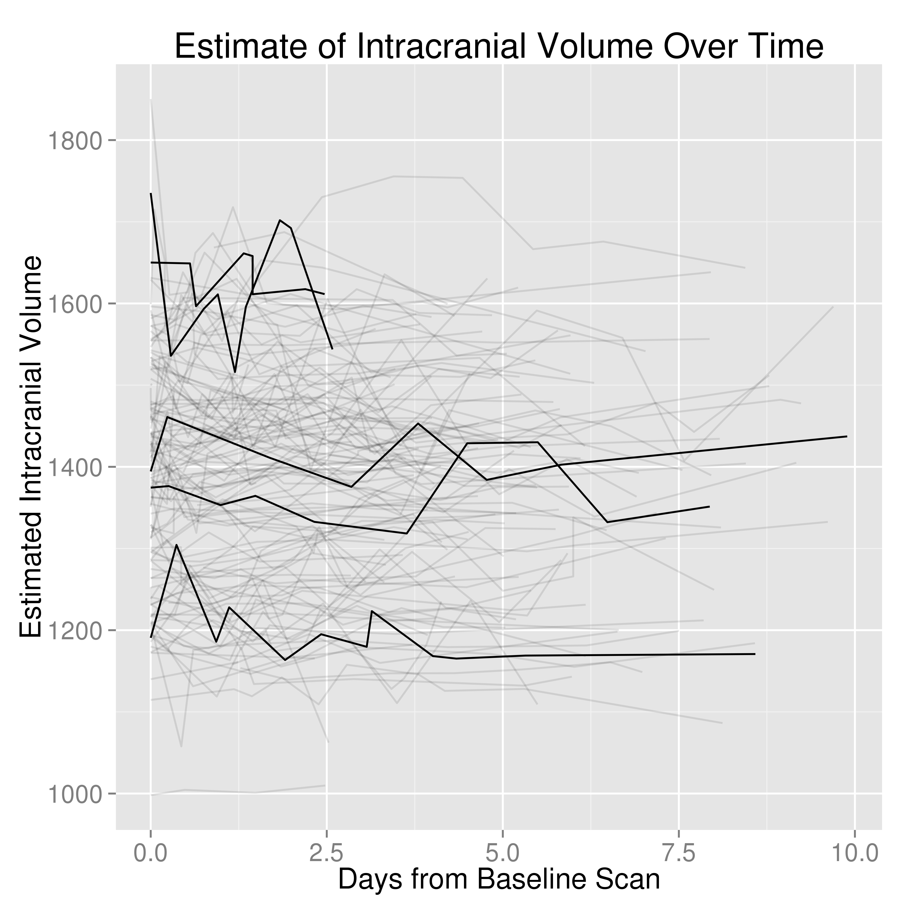

Goals: Project Replace RC
Create a CT image processing pipeline with (at least) these components:
- Brain Extraction
- ICH Localization
- ICH Segmentation
- Longitudinal Registration
@StrictlyStat (github: muschellij2)
Johns Hopkins Bloomberg School of Public Health
Create a CT image processing pipeline with (at least) these components:

| CT | MRI | |
|---|---|---|
| Domain | Diagnostic | Diagnostic/Research |
| Units | Houndsfield Units | Arbitrary |
| Templates | One Publicly Available | MNI Standard (Many Exist) |
| Measures | Measures humans/rooms/beds | Measures Humans |
| Methods | ? | Many |


All "objects" captured

Want to go from this
To This:

Threshold 0- 100 HU:
Result:

Smooth with 1mm Gaussian
Result:

Run BET from FSL:
Result (Skull Stripped Image):



PItcHPERFECT
What is a z-score: If \(\mu\) is a mean, and \(\sigma\) is a standard deviation, then a z-score is:
\[ z = \frac{x - \mu}{\sigma} \]


"The purpose is to create an international consortium of investigators and a repository of source MRI and CT images toward the objectives of standardization and validation of acquisition, analytic, and clinical research methods of image-based stroke research."
 |
 |
 |  |
| T32AG000247 | NIA |
| RO1EB012547 | NIBIB |
| R01NS046309, RO1NS060910, RO1NS085211, R01NS046309, U01NS080824 and U01NS062851 | NINDS |
| RO1MH095836 | NIMH |
Number of patients: N = 123, number randomized: N = 96
Inclusion criteria: age 18-80 years old